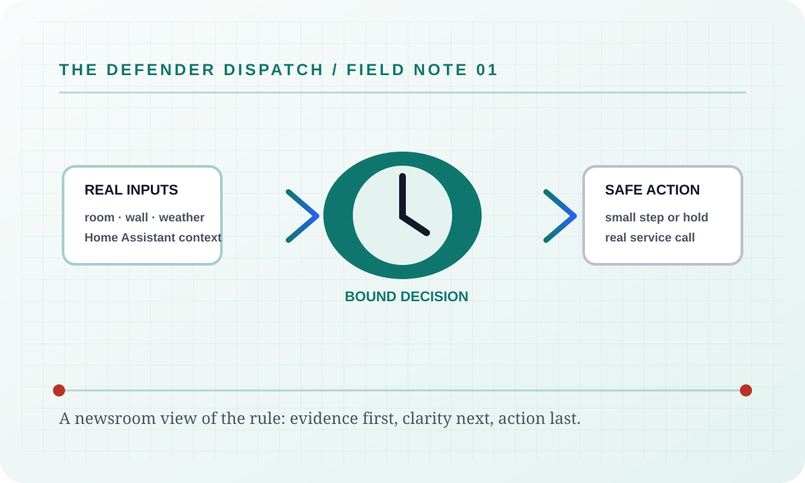

Someone raises it. The room warms up. The defender walks it back.
The point is not to spam the wall unit. The point is to make your chosen temperature survive schedules, phone apps, wall touches, energy rules, and awkward household negotiations without fake HVAC state or simulator tricks.
Real device only
Every command goes to Home Assistant’s configured climate entity or returns a real error.
Comfort wins when warm
Warm-room commands start below the current room temperature by the configured approach, default 0.5 C, then continue toward the target.
Courtesy stays bounded
Quiet waits, stealth timing, budget holds, and compromises are allowed only inside their safety boundaries.

The wall can drift warmer. The target does not.
The defender uses real room readings, not the raised wall setpoint, to choose the next cooling step.
Fifty focused algorithms. One temperature promise.
Every guard has a live purpose: people get courtesy, machines do not train the target, hot rooms bypass quiet waits, and energy savings never invent comfort.
People get grace
Wall touches can earn settling time, conflict quiet, truce windows, and natural-looking recovery when comfort is still safe.
Machines get answered
Rival Schedule Watch recognizes the AC vendor schedule and walks back scheduled warm pushes without treating them like human preference.
Energy stays honest
Runtime counters, Alectra time-of-use pricing, cool-outdoor shutdown, and budget pacing use real telemetry or conservative estimates.
Safety is explicit
Emergency protocols, front-door guard, tamper truce, cooling-failure shutdown, and upstairs comfort are documented and visible.
Every algorithm now has its own article.
Open the Algorithms page to search all 50. Open Defender Logic to search inside each family: Core Cooling, Wall-Touch Response, Sensor Timing, and Safety/Energy/System.
Watch
Real thermostat, sensors, weather, usage, and audit context.
Decide
Each guard explains its own trigger, hold, bypass, and clear rule.
Shape
Safe commands can look human, gradual, and naturally timed.
Act
Commands go through Home Assistant or the UI shows the real failure.

Every feature gets a byline, a boundary, and a way to verify it.
The feature desk treats guards, pages, controls, APIs, releases, and the Windows controller as first-class articles. No feature is left as a mystery card with no failure or security note.
Feature briefs
Search every article in one index, including all algorithm field notes and operator surfaces.
Release desk
Read every released version, date, category, commit link, and exportable change note.
Windows desk
Control the hosted service from a separate Material 3 client while the defender remains server-side.

Clear enough to trust before it touches the thermostat.
The public wiki now has generated visuals, animated flows, and searchable pages so a reader can go from the household problem to the exact guard that handles it.
Website Tour
A screenshot-led tour of the dashboard, defense cards, energy page, logs, controls, settings, and guide.
Every Guard
A plain-language searchable map for readers who want the simple answer first.
Energy and Costs
Runtime, calendar, Alectra Hui telemetry, TOU estimates, budget behavior, and the bill-driven Yell-O-Meter story bands.
Yelling Survival Guide
Fifty-two before, during, freeze-response, overthinking, recovery, and support steps, with a clear route out when a bill discussion becomes unsafe.
Yelling Predictions
All ten playful bill bands, more than forty possible scenarios, and the exact boundary between measured dollars and household folklore.
Heat, Pain & Survival Facts
Sourced hearing, heat-illness, and personal-safety facts—because the joke stops where safety starts.
Deployment
Docker hosting, required Home Assistant settings, and the real environment-variable contract.
Windows controller
A separate Electron client for the hosted service: real sign-in, live telemetry, guarded commands, notification history, settings, and keyboard navigation. Defender logic stays on the server.
Regex search builder
Plain text stays the default while the command palette, Defense roster, and Field Manual offer a bounded local .NET regex builder with guided blocks and timeout protection.